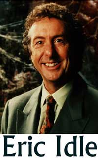

![[Tengo que pensar sobre esto...]](112803-Karla.jpg)
En una futura entrega del Skeptical Enquirer (http://www.csicop.org/si) tendrán el placer de leer un relato titulado “Cruzando el abismo entre dos culturas”, de Karla McLaren, de California. Relatará su conversión en progreso de aficionada total e incuestionado a la New Age a racionalista en evolución, un proceso interesante de seguir. El editor de SI, Ken Frasier, me ha permitido graciosamente incitarlos a ustedes con este extracto:
Para ser justa, un movimiento escéptico surgió durante mis tempranos años adolescentes, pero desafortunadamente creó una escisión cultural profunda que continúa hasta estos días. En los ‘70, Uri Geller (el doblador de cucharas) se volvió popular. Mi primer contacto real con alguien de la cultura escéptica fue presenciar a James Randi en televisión, haciendo pedazos a Geller. Yo no entendía lo que estaba pasando. Uri Geller apareció en el programa de Mike Douglas y en el de Merv Griffin, y podía vérselo claramente realizando sus proezas paranormales allí en televisión. Seguramente Mike y Merv no hubieran participado en una mentira al público… Yo no entendía cuál era el problema del Sr. Randi con Geller, y mis amigos y yo pensamos que Randi era muy mordaz. No aprendí sobre el pensamiento crítico gracias a Randi; lo que aprendí fue que algunas personas estaban ensañadas con los sanadores y la gente con dones paranormales. Sé que no le gustará escucharlo, pero sigue siendo cierto: la conducta y la forma de actuar de James Randi fueron tan insensibles culturalmente que en realidad creó una gigantesca oposición en contra del escepticismo, y un entusiasmo gigantesco hacia la new age que aún sigue en boga, sin disminuir.
Por supuesto ahora comprendo y apoyo la ira, la frustración, e incluso la mordacidad de James Randi, especialmente luego de haber vivido como parte de la new age por tantas décadas; pero todo lo que pude ver entonces fue a un hombre muy sarcástico que parecía atacar a Geller en lo personal. Ahora, luego de haber sido una visitante frecuente del sitio web del señor Randi, puedo verlo como un hombre que se preocupa hondamente y trabaja sin descanso por una causa importante. También veo que está muy preocupado por algunos de los desequilibrados creyentes de la new age que le escriben en cartas apenas legibles. Puedo entender lo que siente el señor Randi, porque a mí también me escribe gente así (aunque yo soy la heroína en su febriles vidas de fantasía, mientrs que Randi es tratado como un villano). Ahora que puedo verlo como un individuo y entender su cultura, puedo apreciar a James Randi como el excelente hombre que es; pero me llevó un tiempo lograrlo. Si el señor Randi hubiera comprendido la cultura de la new age cuando Uri Geller se estaba haciendo famoso, podría haber hablado con facilidad de un modo que pudiera haber sido escuchado, o al menos de forma que no hubiera causado una oposición tan violenta. O quizá soy demasiado idealista…
He estado estudiando el conflicto entre la comunidad escéptica y la comunidad metafísica / new age durante unas cuantas décadas ya, y pienso que finalmente descubrí la principal razón que hace tan difícil la comunicación. No es simplemente, como muchos alegan, un conflicto entre puntos de vista basados en los hechos y puntos de vista basados en la fe. No, es un choque frontal de culturas que hace que la comunicación verdadera sea como mucho improbable.
Conozco esto de primera mano, porque como ex-miembro de la cultura new age luché durante años para descifrar el lenguaje, las reglas, las actitudes, y las expectativas de la cultura escéptica. Aún así, durante mucho tiempo, todo lo que pude oír de la cultura escéptica fue ruido… y un ruido bastante confuso.
Recibo el mensaje, Karla, y acepto sus muy pertinentes comentarios. Quizá está en mi ADN, o quizá sufro una leve disparidad evolutiva, pero con frecuencia siento el impulso (dada mi amplia y constante exposición al disparate) de expresarme con menos gentileza de lo adecuado. Soy consciente de ese defecto, pero no tengo esperanzas de reformar mi conducta en lo inmediato. Con fallas y todo, éste soy yo. A pesar de mis modales, parece que logro hacer algunas cosas, y tendré que consolarme con eso. Gracias por sus observaciones.
Señores, el artículo de Karla en SI valdrá la pena de leerse. Escribe bien y con fuerza, y estoy prestándole atención. Sospecho que tendremos muchas discusiones sobre terminología y semántica, y no puedo garantizar que estaré de acuerdo con mucho de lo que ya ha publicado, pero esencialmente parece ser una buena persona; y allí hay un 80% de los requisitos. Ahora bien, si sólo fuera una viuda rica a la que le atraen los vejetes barbudos…
Hace poco recibí un estridente comentario de una tal Whitney Leigh Harris, quien trató de rectificar mi ignorancia sobre lo que “realmente” se traen los psíquicos. Cuando le hice saber que, con su permiso, publicaría sus comentarios, respondió:
Esperaba que quisiera compartir mi punto de vista en su sitio. Ahora los lectores pueden decidir por sí mismos entendiendo otro punto de vista. Tengo curiosidad por ver si usará todo el texto.
Pienso que su punto de vista será bastante evidente, señora Harris. Respondí:
Whitney: por supuesto que usaré todo el texto. No edito ni censuro material para ajustarlo a mis propósitos, jamás. Publicaré su punto de vista para que mis lectores entiendan mejor las cláusulas de “escape” y la tendencia a la vaguedad que promueven los “verdaderos creyentes”. Aparecerá la próxima semana.
De modo que hela aquí, con mis comentarios intercalados.
Hola, señor Randi. Acabo de encontrar su sitio web y la información en relación con el desafío psíquico del millón de dólares y estoy confundida ante su obvio desconocimiento sobre los psíquicos y por qué este concurso nunca probará nada.
Comentario de Randi: primero, no es un concurso. Es simplemente un premio. Segundo, estoy de acuerdo con que nunca le probará nada a aquéllos que no pueden aceptar evidencias. Continúa ella:
Primero que nada, los VERDADEROS psíquicos no hacen predicciones específicas y detalladas (y si lo hacen, es muy raro y por lo general es sobre tendencias más que sobre detalles específicos).
De acuerdo. Las tendencias son borrosas y obvias; los hechos no lo son. Por lo tanto, se prefieren las tendencias de modo que uno nunca puede equivocarse. Ingenioso… Lo que dice Whitney a continuación insinúa que ella tiene un profundo conocimiento de la “verdadera” naturaleza de los psíquicos y sus temas relacionados, los cuales hasta ahora me han sido ajenos. Dónde obtuvo ella esta información misteriosa, no puedo decirlo, y no lo hará ella. Por claridad, he cambiado la extraña puntuación del original…
Los psíquicos verdaderos pueden sintonizar el campo de energía de un individuo o grupo y comprender las áreas de desafío que pueden referirse a estados de salud o emocionales. Todos tienen habilidades psíquicas hasta cierto grado, pero los psíquicos verdaderamente dotados nacen con habilidades pensadas para ayudar a otros a crecer y a aprender, y NO para entretener con tontos trucos de salón. Un psíquico verdadero posee una intención elevada y amorosa de ayudar a otros por su mayor bien y su mayor felicidad. Un ejemplo podría ser si una joven mujer es parte de una relación abusiva y busca la asistencia de un psíquico. Un buen psíquico podría ayudarla a identificar sus temores más profundos que le impiden abandonar la relación. El psíquico la ayudaría a ver el cuadro completo de su vida e inspirarla basado en la bondad y promesa que ve en ella. Un buen psíquico no haría ninguna predicción incluso si pudiera “ver” su futuro, porque debe tomar control de su propia vida y no volverse dependiente de un psíquico al hacer sus elecciones. Un buen psíquico la alentaría a escuchar los deseos de su corazón, lo que es difícil de hacer cuando se tiene miedo. El psíquico la ayudaría a aprender a aceptar sus pasiones y sus dones. Y cuando la lectura termina, el psíquico ha ayudado a la mujer a ganar conocimiento de sí misma y una perspectiva nueva de sí misma y su situación, y ella puede irse con más confianza en sí misma, en su propia sabiduría, y su poder. ASÍ es una lectura psíquica saludable. ¡Por alguna razón, no veo dónde encaja la predicción de los números de la lotería en los aspectos más importantes de la propia vida! Así que ¿entiende por qué las “predicciones” no es lo que hacen los buenos psíquicos?
¡Maldición! ¡Esa es buena! En resumen: los psíquicos no pueden hacer nada salvo debatirse y adivinar, si tienen suerte, y hacer bonitos sonidos tranquilizadores. Justo lo que sospechaba. Pero Sylvia Browne, seguramente una “buena psíquica” según Whitney, hace predicciones todo el tiempo, aunque estén equivocadas. Continúa diciendo:
El otro aspecto de todo esto es el hecho de que un psíquico verdadero cree en sí mismo y en su guía tan profundametne, que no tienen deseo ni necesidad de probarse a sí mismo. Se preguntarían: “¿Cuál es la ‘intención’ aquí?”. Si la intención fuera hacerse con un millón de dólares, entonces no deberían ejercer la práctica psíquica porque su meta se ha vuelto el dinero, así que para mí no tiene sentido.
¡Epa! Como he sugerido antes, ¿por qué uno de esos psíquicos no se presenta, gana el millón con una demostración rápida, dona noblemente el dinero a los niños hambrientos o la investigación contra el SIDA, y me hace ver como un tonto y hace que la JREF pierda un millón? Seguramente eso serviría para promocionar a los psíquicos “verdaderos” y reconfortaría el corazón de Whitney. Más:
En otras palabras, la mayor parte de los buenos psíquicos que ayudan a la gente obtienen satisfacción con su traajo y no desean entrar en concursos organizados por escépticos. No sé qué tipo de prueba usará para este desafío, pero si se refiere a números u objetos específicos, o cómo se ve alguien, o lo que sea, con confianza puedo decir que nadie ganaría porque la práctica psíquica no se trata de eso. ¡No se refiere a poder espiar! Si alguien está luchando con algún problema en su vida, el psíquico verá lo que es más necesario para ayudar a esa persona, y en la mayor parte de los casos, ganar la lotería no los va a ayudar a resolver los problemas más profundos de su vida, ¡y esa es la razón por la que los psíquicos no pueden ver esas cosas materiales para nadie!
Tengo que preguntar: Whitney, si la “práctica psíquica” se refiere a eso, entonces ¿por qué miles de “psíquicos” hacen afirmaciones específicas, salen con números exactos, y dan fechas? Supongo que no tienen la profunda conciencia de usted acerca de cómo evitar hacer o decir en realidad algo, en lugar de dar volteretas por ahí. Continúa:
Señor, simplemente usted no entiende este trabajo en lo absoluto. Sí, hay algunos artistas del engaño por ahí alimentándose de la vulnerabilidad de la gente cuando son débiles y tienen miedo. Y esa gente hace algo muy distinto. No están usando habilidades psíquicas, sino ingenio y habilidad para la venta, y no estarán en el negocio por mucho tiempo.
¿En serio? ¿Como Sylvia Browne, que ha estado en el negocio por 30 años, George Anderson, en su cuadragésimo año de éxito, y James Van Praagh, quien ha estado sonriéndole como bobo a sus víctimas por más de 20 años? Yo diría que eso es “mucho tiempo”.
Espero que encuentre la paz con esto de alguna manera. Claramente usted siente mucha ira contra la gente que tiene este don. Pero hay muchos psíquicos que trabajan desinteresadamente cada día que no buscan fama y fortuna (de hecho, muchos donan su tiempo), y simplemente hacen lo que les gusta mientras que ayudan a otros a mejorar sus vidas. Y, sabe, esa gente nunca participarán en juegos como este, y yo digo: ¡Bien por ellos!
Esa es la generosa piedad que suelen rociarme los santurrones. Browne también le dijo a Larry King que sentía pena por mí, por mi ignorancia y mi obstinación. Qué reconfortante, que me bendigan a pesar de mis fallas. Whitney, yo encontré la “paz” hace mucho tiempo, y lo que siento por los estafadores no es ira, sino desdén. Cuenta con que los “desinteresados” que hacen todo gratis de pronto se interesan en el dinero, tan pronto como son bastante hábiles en la estafa. ¡Los he visto pasarse al “lado oscuro” (en contraposición al “lado impreciso”) muy rápido, cuando se ha abierto esa puerta!
Whitney, gracias por la lección en ingenuidad y oscurantismo.
¡Hey! Ahora tenemos otra oportunidad más de ver si Sylvia Browne tiene realmente algún poder. Ya que parece bastante evidente que nunca cumplirá su promesa de ser probada por la JREF, estas son efectivamente buenas noticias. La semana pasada esta sorprendente psíquica de Campbell, California le dijo a un hombre de Belmont que su esposa perdida todavía estaba viva y se había unido a un culto. La víctima de esta suposición fue Bruce MacDuckston, quien apareció en el programa “Montel” para obtener información sobre su esposa de 52 años, Nancy, una maestra de preescolar que desapareció el 11 de agosto. Aunque Bruce no es la primera persona que ha perdido a alguien en circunstancias misteriosas y luego buscado la ayuda de un psíquico en televisión, nos ha dado un gran caso de prueba para observar y evaluar.
Aquellos que han aparecido en tales programas, así como los expertos, tienen pensamientos encontrados sobre si esos programas realmente ayudan a las investigaciones, qué obtienen las familias de la experiencia, y si los psíquicos televisivos realmente están allí para explotar la desesperación de la gente a cambio de entretenimiento y publicidad. Pero hay más: Silvia también le dijo a MacDuckston que el hombre misterioso que fue visto por última vez con su esposa era un “líder de un culto”. Los investigadores de la policía de Belmont han verificado la “evidencia” de Browne, producida en la grabación de octubre del programa, pero no han encontrado indicación alguna de que hubiera algún culto involucrado en la desaparición. Pero, dicen, seguirán teniendo presentes las afirmaciones de Sylvia. Y también nosotros, Sylvia, también nosotros.
No es la primera vez que la policía de Belmont ha prestado atención a un psíquico. Le prestaron atención durante la investigación del 14 de octubre de 1996 de la desaparición de un tal Ylva Hagner, quien nunca fue encontrado en los siete años que pasaron, a pesar de esta potencial ventaja. Dado que fue una falla de un psíquico, nunca salió en las noticias.
La familia MacDuckston tiene la actitud habitual (“no puede hacer daño”) referida a involucrar un medio altamente dudoso de resolver un misterio. “Cuando uno está en una situación como esta, uno se abre a más posibilidades y sugerencias”, dijo Bruce. “La policía no ha obtenido nada en firme. En ausencia de hechos sólidos uno está prácticamente obligado a intentar cualquier cosa”. Sí, y en este caso, es como probar galletas chinas de la fortuna o un mazo de Tarot al que le faltan cartas…
La productora de Montel no cree que “Montel” esté explotando la desesperación de la gente, porque los invitados con frecuencia piden estar en el programa, y porque —supone— la exposición nacional es útil para las investigaciones policiales. Señaló que Browne no siempre le da buenas noticias a la gente, y que le ha dicho a varias personas que sus seres queridos están muertos. Pero también omitió mencionar que algunas de esas personas no estaban muertas…
La investigadora Lindsey Brooks, de la agencia sin fines de lucro para búsqueda de niños Child Quest, con sede en Campbell, tiene una visión mucho más realista del asunto. Dice que las familias de las personas desaparecidas son particularmente vulnerables a los “psíquicos” que pueden sacar ventaja de ellos. “Cuando alguien pierde a un miembro de la familia, se vuelven desesperados”, dijo. “Algunos psíquicos se alimentan de eso… es uno de esos temas sobre los que hay que ‘advertir al consumidor’”. Dijo que Child Quest ha prestado atención a psíquicos en algunos casos de niños extraviados, pero nunca ha resuelto un caso con su información.
Prestaremos atención para ver si esta mujer perdida (a) estaba viva en la fecha en que Sylvia hizo su suposición, (b) se había unido a un culto, y (c) si ese hombre con el que almorzó era el líder de un culto. ¡No puedo esperar!

Eric Idle, del grupo Monty Python, está haciendo una serie para los medios llamada “La vuelta a los estados en ochenta días”. Acaba de publicar: “Día 51. Feliz cumpleaños, dulce Tania”, el miércoles 19 de noviembre de 2003, desde el Teatro Pantages de Minneapolis. He aquí un extracto, junto con las notas de su editor…
Es el cumpleaños de mi esposa. Ahora he estado con ella más de la mitad de su vida. Pobrecita. Debe ser una santa. Pero es de Escorpio. Así que cuidado. De acuerdo con esa ridícula estupidez llamada Astronomía —una pseudociencia insensata si las hay—, los de Aries nunca se llevan bien con los de Escorpio. Bueno, 26 años dicen que eso es basura. (Ya ves, Eric, es ese lenguaje inapropiado lo que hace que te prohíban en el sitio de acceso a internet de la Biblioteca Pública de Malmesbury. N. del E.) Si la gente quiere seguir creyendo que todo el mundo está dividido en doce, basada en observaciones astronómicas que están obsoletas hace 2000 años, entonces es problema de ellos. Las constelaciones ya no están ubicadas en el cielo en el mismo lugar donde se supone que estén y todos saben que la tarea más insignificante de un diario y el primer trabajo que le dan a los recién contratados es escribir la columna de astrología. Aún así, la gente insiste en creer en esta insensatez más allá de toda evidencia, lo que muestra que la necesidad de la humanidad de creer en algo, lo que sea, es muy fuerte, y le hace fácil ganar millones a todos esos hombres espantosos, despeinados y con trajes de mala calidad de la televisión. (Bueno, ya entendimos. N. del E.)
¡Epa, Eric! Creo que realmente quisiste decir “Astrología”, y si así fue, estamos 100% de acuerdo. Pero toma nota de lo que te digo: serás señalado como un incompetente por haber cometido este pequeño error. Los astrólogos festejarán tu falta de conocimientos y de sofisticación, tu escasa captación de la realidad, etc. Y yo apruebo tu lenguaje. Dilo tal cual es. ¡Al diablo con la Biblioteca Pública de Malmesbury, sea lo que fuere!
El lector Steven E. Cerier, de Forest Hill, Nueva York, quien ha escrito antes, nos dice:
Vivimos en una era dominada por la ciencia y la tecnología, lo que ha mejorado nuestro disfrute de la vida, prolongado nuestra expectativa de vida y erradicado enfermedades, tales como la viruela y la polio, que no hace mucho eran responsables de la muerte y la invalidez de cientos de miles de personas cada año. Cada día trae el anuncio de una nueva droga maravilosa, o de un nuevo descubrimiento en ciencia. Cada día, se desarrolla una nueva tecnología que ayudará a mejorar la calidad de nuestra vida. Por lo tanto es una paradoja muy extraña que mucha gente desconfíe de la ciencia y de la tecnología y ponga su fe en lo metafísico, lo sobrenatural, la medicina alternativa y lo paranormal.
Es desafortunado que lo irracional se haya filtrado en tantos aspectos de nuestra sociedad y que genere tanta atracción y fascinación para tanta gente que adopta con entusiasmo creencias absurdas, idiotas y cuestionables que no tienen explicación lógica y desafían la sabiduría de la ciencia. Quizá esto se debe a que la vida es una travesía muy complicada y mucha gente busca respuestas simplistas para problemas complejos. Quizá es porque hay una dimensión espiritual para lo metafísico que ayuda a darle significado a las vidas diarias de la gente y a los eventos aleatorios.
Lo paranormal y lo sobrenatural proveen respuestas simplistas que atraen a mucha gente. Las enfermedades, por ejemplo, son el resultado de patrones estancados de energía. Disperse estos patrones estancados y podrá curarse usted mismo. La dieta macrobiótica y la medicina homeopática puede curar el cáncer. Como resultado, uno no tiene que atravesar la dolorosa experiencia de una operación o de la quimioterapia para curarse. Todo lo que tiene que hacer es cambiar la dieta y recitar unas pocas palabras mágicas cada día. Las cartas de tarot y las líneas de la palma de la mano pueden adivinar el futuro. La comunicación con los muertos puede aliviar la carga de los dolores y las dudas de una relación con un ser amado que ha fallecido. La noción de la reencarnación sugiere que si uno no tiene éxito en esta vida, uno tendrá otra oportunidad. Cuán seductor es creer que las alineaciones de los planetas influyen en nuestras vidas y como resultado, todo lo que tenemos que hacer es leer nuestro horóscopo para saber si éste será un día bueno y productivo.
Ojalá la vida fuera tan fácil. Ojalá fuera tan simple como consultar mi carta astrológica para ver cuál es el momento más propicio para invertir en el mercado de acciones o para enamorarse o ir de vacaciones o comprar una casa. Ojalá la medicina alternativa fuera válida porque evitaría el mucho sufrimiento que la gente ebe experimentar para curarse y recuperarse de las enfermedades serias. Pero ese no es el caso. La vida no es tan simple. No hay respuestas fáciles para los problemas difíciles, tal como los proveedores de lo paranormal, lo sobrenatural y la medicina alternativa quisieran que creyéramos.
La gente tiene un interés particular en sus propios prejuicios y se aferrará tenazmente a sus creencias, no importa cuán irracionales o ilógicas sean. Como resultado, he dejado de discutir con los devotos de lo metafísico y la medicina alternativa porque sé que nunca cambiarán de parecer, por más hechos que se les presenten. En lugar de ser abiertos de mente, se aferran a sus creencias y se entierran ellos mismos en simas de las que es imposible desenterrarlos. Creen en las cosas más extraas en lugar de alterar sus puntos de vista y admitir que están equivocados. La ciencia es completamente irrelevante para ellos. Es un concento sin significado, especialmente porque creen que es una herramienta de las corporaciones corruptas que valoran las ganancias por encima que la gente. Esto es especialmente cierto en la controversia sobre los alimentos transgénicos. Escuchando a los críticos de estos alimentos uno creería que son veneno en vez de un logro científico que tiene el potencial de reducir significativamente el uso de pesticidas, incrementar la producción de cultivos y mejorar el valor nutritivo de la comida. Pero los oponentes de los alimentos trangénicos se rehúsan simplemente a escuchar razones.
He llegado a darme cuenta de que mucha gente no ve a la ciencia en términos benéficos. En vez de ello, la ven como un “demonio descontrolado” que es dominado por una “élite”, empeñada en manipular nuestras vidas. Este punto de vista es el producto de una creciente sospecha hacia toda forma de autoridad. Desafortunadamente en este aspecto, hemos visto con frecuencia cómo el gobierno le ha mentido al pueblo estadounidense, como sucedió con la guerra de Vietnam y con Watergate. Es lógico que muchos asuman, por lo tanto, que si el gobierno nos mintió sobre esas cosas, también nos está mintiendo sobre Roswell, las causas del apagón de este verano, y el aterrizaje del hombre en la luna.
La ciencia no es inmune a la creciente desconfianza en nuestras instituciones y pilares de autoridad. Muchos preguntan por qué deberíamos tener fe en la ciencia cuando ha habido tantos escándalos en las industrias farmacéutica y quiímica, cuando el cuidado de la salud es tan caro, cuando existe la errónea y extendida creencia de que la vacunación produce autismo, los teléfonos celulares producen tumores cerebrales, y la mayor parte de las medicinas tienen serios efectos colaterales.
La gente como yo, que se autodefine como escéptica, es acusada con frecuencia de no creer en nada. Pero prefiero que me acusen de no creer en nada que ser tan crédulo para creer en los conceptos y nociones más ridículos, absurdos e idiotas. Prefiero poner mi confianza en la ciencia que en lo metafísico y lo paranormal. No suscribo al punto de vista de que creer en algo es el único criterio para que sea verdad. En lugar de ello, exijo pruebas. He aprendido, sin embargo, que la creencia supera a las pruebas y que es por ello que la razón y la lógica con frecuencia no prevalecen y lo absurdo y lo ilógico son adoptados con entusiasmo.
Gracias por tus comentarios, Steven. ¿Comentarios de los lectores?
Un tal Thomas M. Jones me ha escrito para corregir un error en la página de la semana pasada. Me informa que, en su calidad de webmaster, escribió los comentarios que yo adjudiqué a Montague Keen en relación con la foto “espiritual” que vieron allí, y que esos comentarios se referían a una fotografía de “Eva C.” diferente de la imagen que yo usé en la página web. Acepto la corrección.

Para informarme mejor, me dirigí a un divertido libro de la biblioteca de la JREF escrito por un tal Fred Gettings, titulado “Fantasmas en las fotografías”. Esta es una colección de errores fotográficos increíblemente obvios y falsificaciones flagrantes que los fieles —incluido Montague, estoy seguro— han aceptado como prueba de la supervivencia después de la muerte por la vía de las malas fotografías. Les doy aquí un ejemplo, una foto de Linda Gazzera tomada en 1909 en Turín, Italia. Ella está desmayada o en trance, nos dicen, y la cosa rara en la pared tras ella es un “rostro bien modelado, envuelto en lo que parece ser un velo ectoplásmico blanco”. Señores, para mí, eso parece ser un pedazo de gasa pegada a un recorte de una revista de moda. Pero yo no soy un científico, ¿recuerdan? Sin embargo, me atreveré a esta observación. La fotografía mostrada se tomó mientras, según el texto, linda estaba “controlada” y “se le sostuvieron las manos durante todo el trance”. Claro. Miren más de cerca.
Para disculpar el hecho de que algunos de los estrepitosos ejemplos de credulidad de este libro parecen —a los ojos de cualquier observador razonable— fotos de toscas figuras de yeso y sencillas fotos de revistas arrugadas, un doctor Charles Richet, fisiólogo francés y premio Nóbel que dedicó muchos de los últimos años de su vida a la pseudociencia, escribió esta justificación para la Sociedad Estadounidense para la Investigación Psíquica en 1925:
El hecho de que estos ectoplasmas no estén vivos no es objeción en lo absoluto: no hay nada que nos impida admitir que el ectoplasma puede ser simplemente una imagen, y no un ser vivo. Ciertamente, la materialización de una cabeza de yeso, o una impresión litográfica, no es en sí misma una idea más absurda que la de una cabeza humana, que contenga sangre, movimiento y pensamiento.

Increíble. Aunque no soy un fisiólogo, tiendo a pensar, con toda testarudez, que un ser humano vivo es más complicado (por varios órdenes de magnitud) que un muñeco de yeso mal hecho o una fotografía. Compárese una cabeza humana real con esta “materialización” de yeso, gasa enmarcando una fotografía de revista, que fue exhibida y discutida en un capítulo de 30 páginas de “Intention and Survival”, un libro de 1942 que describía este objeto “sobresaliente” como “de muchas formas uno de los más importantes ejemplos singulares” de una forma espiritual. Si esto es algo más que una burda falsificación, mi nombre es Liz Taylor.
Montague, despierta de tu interminable ensoñación…
El lector August Pamplona, entre varios otros, me criticaron por no notar que las fotos de Macchu Picchu a las que los envié la semana pasada, cuando se examinan con cuidado, es un gran fraude con PhotoShop. Bueno, he estado allí varias veces, y he tomado muchas fotos de esa área. Esa ubicación en particular no la había visto, pero como señala August, está muy bien retocada para satisfacer los requisitos del o los fraudulentos. No lo había notado. ¡Lo siento! Pero estoy seguro de que si examináramos bastante imágenes de esa o de cualquier otra área, encontraríamos fotos bastante buenas para usar de la misma manera. Simplemente me falta el tiempo para hacer todo eso…
¡Gracias, August, y los demás!
Algo que me faltó decir cuando despotricaba la semana pasada en relación con la rueda, es que para arrastrar un vehículo con ruedas hace falta cierta fuerza. Las llamas que se hallan en Sudamérica no son apropiadas por temperamento ni por físico para tal actividad. Varios lectores me señalaron esto, ¡algo que se me había olvidado!

Comentarios
Comments powered by Disqus